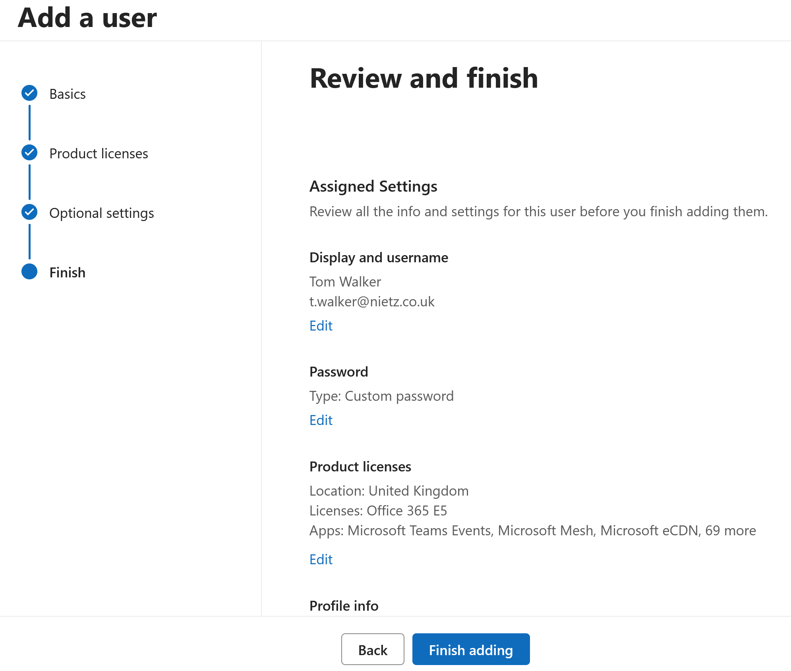
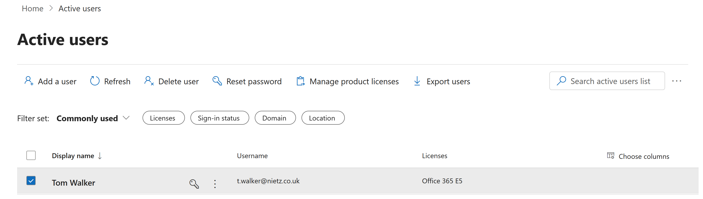
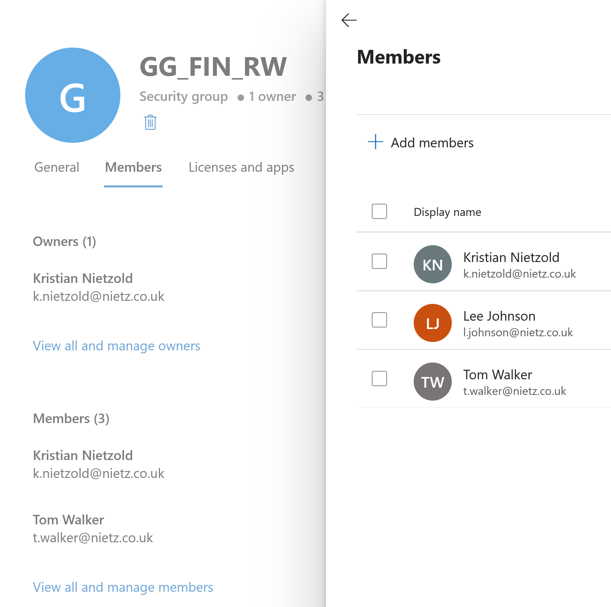
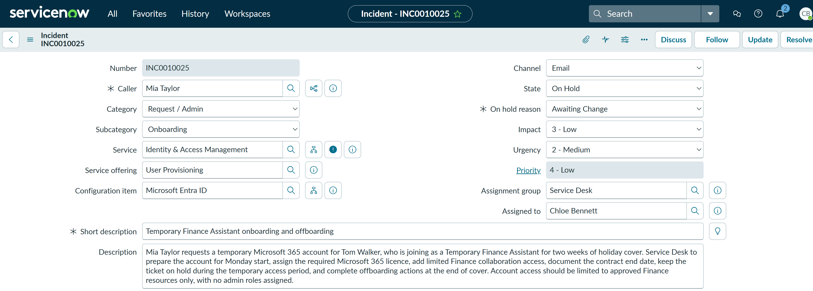

TS-019: Temporary Finance Assistant onboarding and offboarding
Coordinated a time-limited Microsoft 365 onboarding request through Service Desk triage, least-privilege escalation and administrator-led provisioning, while retaining the ticket for controlled offboarding at the end of the placement.
Scenario
Mia Taylor requested a Microsoft 365 account for Tom Walker, who was joining as a Temporary Finance Assistant for two weeks of holiday cover. The Service Desk needed to create the account, assign the required Microsoft 365 licence, provide approved Finance access and ensure that the temporary access remained tracked for removal at the end of the placement.
ServiceNow Ticket
The request was received by email from Mia Taylor and assigned to Chloe Bennett for Service Desk fulfilment. The description recorded the temporary role, the two-week access period, the required Microsoft 365 account and the approved Finance security group.

Investigation
Chloe checked whether the Service Desk account could create the new user through Microsoft Entra ID. The Create new user option was unavailable, confirming that the first-line account did not have unnecessary user-administration permissions.

User creation, licence assignment and Finance group administration were outside Chloe's delegated first-line permissions. She documented the permission boundary in the ServiceNow work notes and escalated INC0010025 to Kristian Nietzold, the Microsoft 365 administrator, requesting creation of t.walker@nietz.co.uk, assignment of the approved Office 365 E5 licence and membership of GG_FIN_RW. The escalation also stated that no administrative roles were required.
Fix Applied
Kristian reviewed the authorised request and the details supplied by the Service Desk. Before creation, he confirmed Tom Walker's username as t.walker@nietz.co.uk, set the usage location to United Kingdom and selected the approved Office 365 E5 licence.

Using the administrator account, Kristian created the user and assigned the required Office 365 E5 licence. This completed the privileged provisioning action without granting Chloe broader user-administration rights.

Kristian then added Tom to the GG_FIN_RW security group to provide the approved Finance read/write access. Group-based access was used instead of direct permissions so that departmental access could be administered consistently and removed cleanly during offboarding. The completed administration work was returned to Chloe for first-line validation and requester communication.

Validation
After the administrator completed the change, Chloe validated the result from the Service Desk side. The Microsoft 365 active-users list showed Tom Walker with the expected username and Office 365 E5 licence, while membership of GG_FIN_RW confirmed that the required Finance access had been provisioned.
The completed checks confirmed that the account existed with the correct username, the required Microsoft 365 licence was assigned, the approved Finance security-group membership was present and the Service Desk permission boundary had been respected.
Current Status
The record was reclassified as Request / Admin > Onboarding and linked to the Identity & Access Management service, User Provisioning service offering and Microsoft Entra ID configuration item.
Following validation, the ticket was assigned back to Chloe Bennett. The onboarding work was complete, but the request was placed On Hold - Awaiting Change rather than resolved because the temporary account still required controlled offboarding at the end of the two-week cover period.

Summary
- I logged and classified a time-limited onboarding request for a temporary Finance employee.
- I confirmed that Chloe's Service Desk account could not perform privileged user creation, demonstrating the intended least-privilege boundary.
- I documented and escalated the approved provisioning work to Kristian Nietzold, the Microsoft 365 administrator.
- Kristian created
t.walker@nietz.co.uk, assigned the Office 365 E5 licence and granted Finance access throughGG_FIN_RW. - I returned the ticket to Chloe for first-line validation, documentation and requester communication.
- I validated the account, licence and group membership after provisioning.
- I updated the ServiceNow classification with the correct service, service offering and configuration item.
- I retained the request under Service Desk ownership so that the temporary access remained tracked for offboarding.